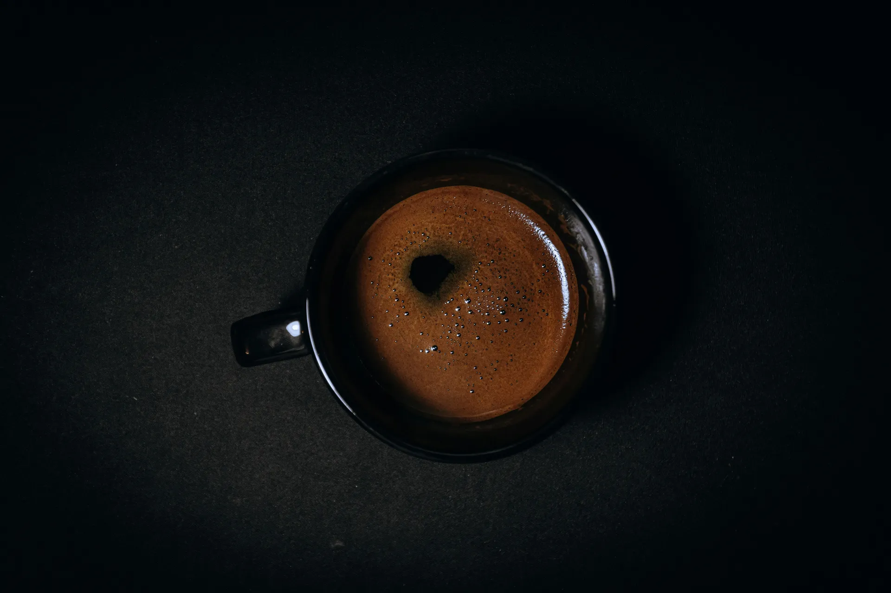
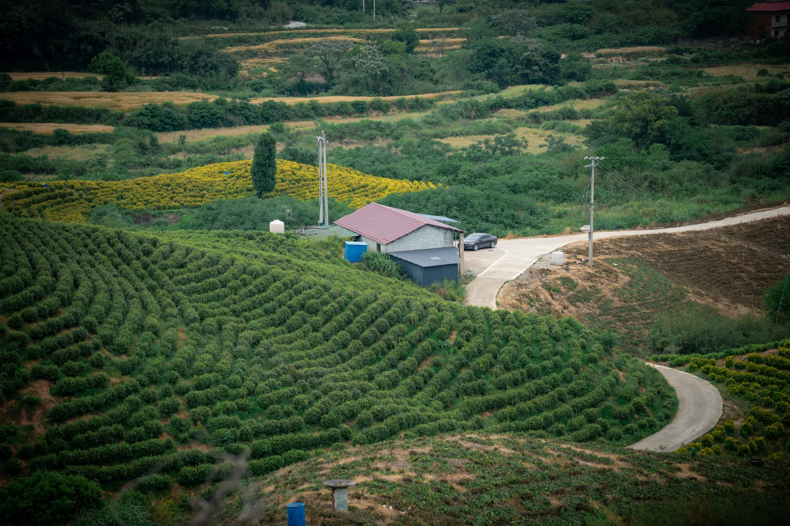
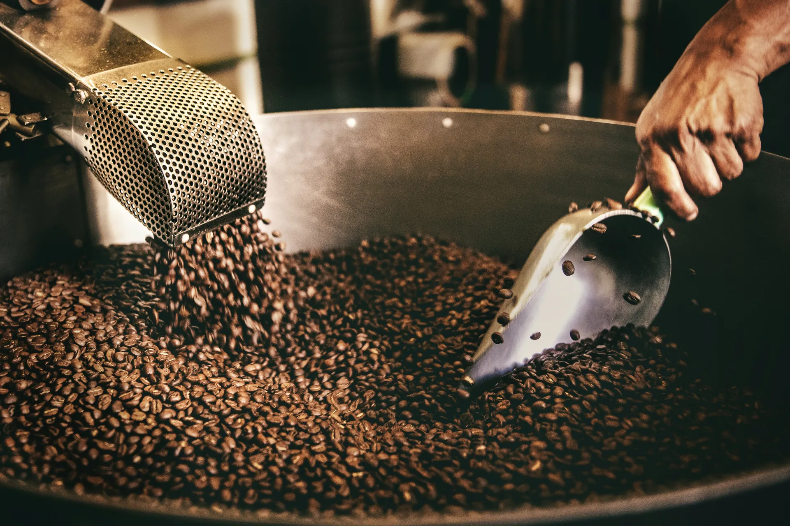
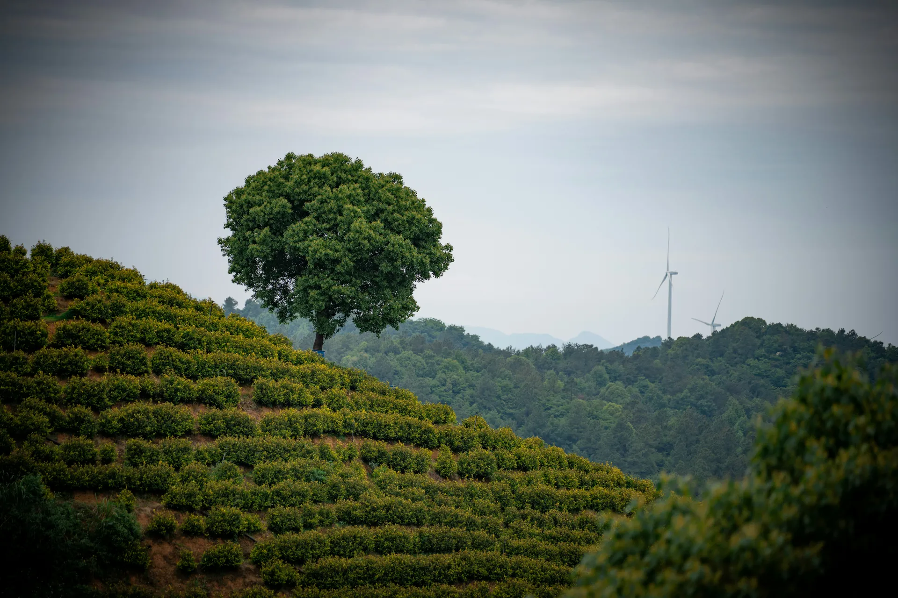

Lusaka, Zambia · Est. 2021
Single-origin espresso, grown in the highlands of Northern Zambia.
The Origin
The Muchinga Escarpment sits at 1,800 metres above sea level. The altitude, the volcanic soil, and the equatorial light create conditions found nowhere else on the continent. Our beans are grown there, and nowhere else.
We work with a single cooperative of 28 families who have farmed this land for three generations. Every bag is traceable to a specific farm and a specific harvest season.

1,800m
Muchinga Escarpment
How We Work

01
Hand-picked at peak ripeness, only once a year, between May and July.
02
Washed and dried on raised beds for 21 days. No mechanical dryers.
03
Small-batch roasted in Lusaka within 30 days of arrival. Medium-dark only.
04
9 bars of pressure. 25 seconds. The same every single time.

Find Us
Cairo Road, Lusaka · Mon–Sat 7am – 6pm
hello@zespresso.zm